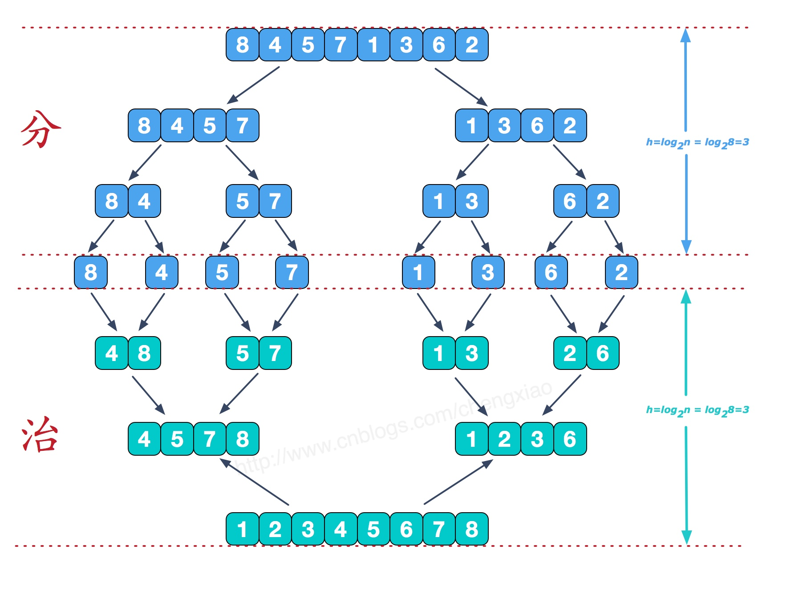
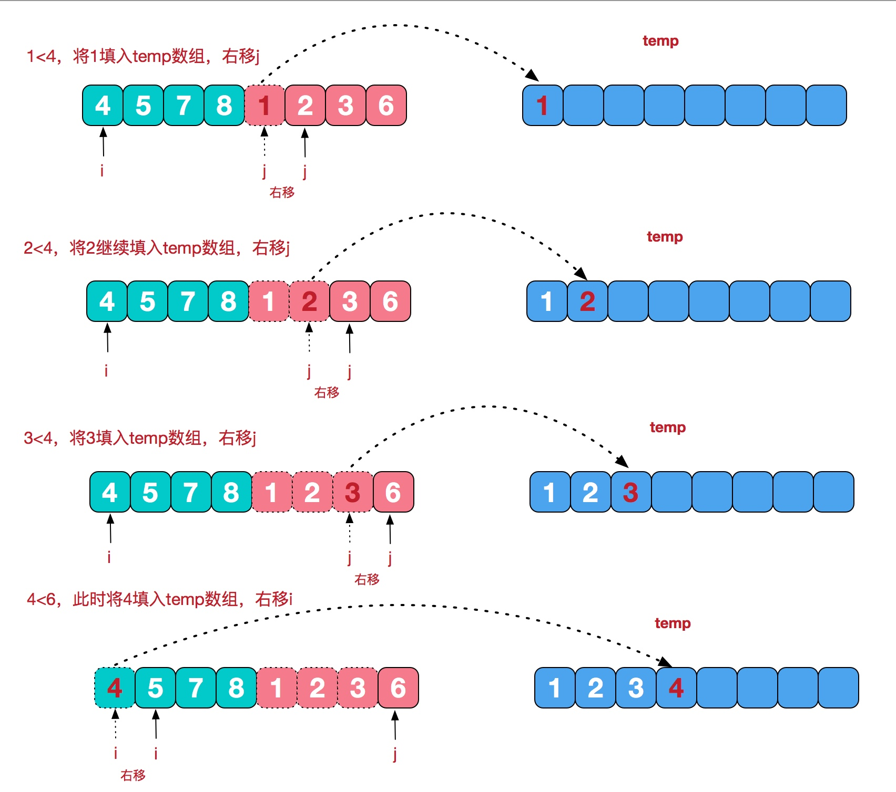

归并排序(Merge Sort)
归并排序(Merge Sort)
1. 算法思想
归并排序（Merge sort）是建立在归并操作上的一种有效的排序算法。该算法是采用分治法（Divide and Conquer）的一个非常典型的应用。
作为一种典型的分而治之思想的算法应用，归并排序的实现由两种方法：
- 自上而下的递归（所有递归的方法都可以用迭代重写，所以就有了第 2 种方法）；
- 自下而上的迭代；
和选择排序一样，归并排序的性能不受输入数据的影响，但表现比选择排序好的多，因为始终都是 O(nlogn) 的时间复杂度。代价是需要额外的内存空间。
2. 算法步骤
- 申请空间，使其大小为两个已经排序序列之和，该空间用来存放合并后的序列；
设定两个指针，最初位置分别为两个已经排序序列的起始位置； - 比较两个指针所指向的元素，选择相对小的元素放入到合并空间，并移动指针到下一位置；
- 重复步骤 3 直到某一指针达到序列尾；
- 将另一序列剩下的所有元素直接复制到合并序列尾。

递归深度为$log2n$。
逐层合并过程：

3. 算法实现
1 | public class MergeSort implements IArraySort { |
1 | // Iteration version |
4. 快速排序和归并排序时间复杂度计算上的差别
- 对于归并排序，计算中间值：$O(1)$，之后将数据二分，这个过程等如果不使用将数据拷贝到新的数组，而仅仅是在原数组操作索引的话，就相当于啥都没做就分好区了，而这种计算中间值分区的操作一共要进行$logn$次；分到最后，逐层网上归并，每次归并时间复杂度是$O(n)$，虽然在最底层只有两个元素，但是复杂度要考虑一般情况，而每次往上，需要归并的元素越多；总体上是$O(nlogn)$
- 对于快速排序，每次选用第一个元素做 pivot：$O(1)$，之后分区的动作就不想归并那么简单啥都不做了，而是需要双向右左遍历数组，将大的放 pivot 右侧，小的放 pivot 左侧，这个过程每次要双向遍历数组，时间复杂度是$O(n)$;这种分区要进行$logn$次，总体上时间复杂度是：$O(nlogn)$